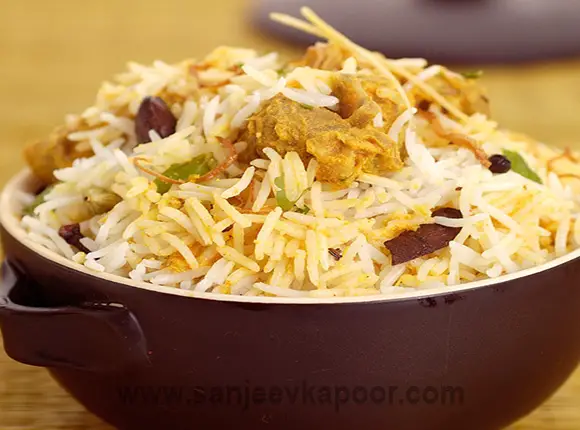

Chicken Biryani

perfectly layered Chicken Biryani, dum cooked to perfection!
Ingredients
- Boneless chicken 600 grams
- Basmati rice 1 1/2 cups
- Oil 3 tablespoons
- Oil 3 tablespoonsCinnamon 1 inch stick
- Bay leaves 2
- Cloves 5-6
- Cumin seeds 1 teaspoon
- Green cardamoms 3-4
- Onions sliced 2 medium
- Green chillies slit 3
- Turmeric powder 1/4 teaspoon
- Tomatoes chopped 2 medium
- Salt to taste
- Ginger paste 3/4 teaspoon
- Garlic paste 3/4 teaspoon
- Red chilli powder 1/2 teaspoon
- Thick yogurt 1 cup
- Onions sliced and fried 3 medium
- Garam masala powder 1/2 teaspoon
- Ginger cut into thin strips 1 inch piece
- resh mint leaves torn a few
- Fresh coriander leaves torn a few
- Milk 1/2 cup
- Rose water a few drops
- Eggs boiled and sliced 4
Recipe Method
- Cut chicken in one inch pieces. Boil rice and set aside. Heat oil in a non-stick pan,
add cinnamon, bay leaves, cloves, cumin seeds, green cardamoms and sauté for half a minute.
- Add sliced onions and sauté. Add slit green chillies and chicken cubes and continue
to sauté. Add turmeric powder and mix. Add tomatoes and salt and mix. Add ginger-garlic paste, red chilli powder and yogurt. Mix well.
- Add half the fried brown onions. Add the boiled rice on top. Sprinkle garam masala
powder, ginger strips, mint leaves and coriander leaves. Sprinkle milk, rose water and remaining browned onions.
- Cover and cook on low heat for about ten minutes. Garnish with the egg slices and serve hot.
Return to top
Retrurn to homepage